1 Introduction
Occupational stress is an important workplace issue, affecting both the health of individuals, both physical and mental, and the health of organizations, from turnover, poor productivity, and poor collaboration [1]. Since its inception, Agile software development has emphasized elements that should prevent stress. For example, Extreme Programming (XP) specified a “sustainable pace”, and both XP and Scrum emphasized the importance of self-organizing teams. In analysis of the 2014 Swiss Agile Survey [3], however, we were surprised to see that stress appeared to be an issue, especially for practitioners new to Agile. In this paper, we explore the possible reasons for this phenomenon, using data from the 2016 Swiss Agile survey [4].
In the earlier study [5], we asked professionals to identify characteristics that reflected their perception of working in an Agile software development environment. In particular, we explored differences reported by those new to Agile, those with some experience, and those with more extensive experience. One of the themes in our analysis of the 2014 survey was collaboration, and we showed that Agile experience typically began emphasizing technical practices, but that collaborative practices increased in importance with experience. We therefore speculated that stress in Agile might relate to an under-adoption of collaborative practices. The 2016 Swiss Agile Study gave us an opportunity to explore this. Our overall questions were: how do professionals rate how Agile has influenced their stress; how is their stress related to the level of agility in their process; and how is their stress related to their team practices and to the influences they see resulting from their process.
The rest of this paper is structured as follows. In Sect. 2 we outline related research on stress in software engineering processes, and in Sect. 3 we describe our study method. We then present our results in Sect. 4, showing how stress was related to aspects of the software engineering process. In Sect. 5 we discuss these findings and offer our conclusions.
2 Related Work
The paper we cite in the introduction [1] marked a recognition of the way that stress has a negative effect on both individual and organization, and much research has followed. We focus here on research specifically relating to software engineering.
Sonnetag et al. [10] found that stress was related to the “burnout” phenomenon in software development, in particular stress stemming from lack of control, high task requirements, and poor interaction within teams. Mannaro et al. [7], studied factors affecting satisfaction in software teams, and specifically looked at the relationship between stress and the software process being used, finding that (then new) Agile methods were associated with less stress. Rajeswari and Anantharaman [8] studied software professionals in India, and found major stress factors were fear of obsolescence and unhelpful interactions within the team and with clients. A general review of research on teamwork and stress [9] addressed teamwork in a range of industry work, including software development, finding that the quality of interactions within the team to be a key issue. Laanti studied wellbeing and stress in Agile teams within a large organization [6], and found empowerment to be the major factor for healthy teams, but also found that teams perceived as performing poorly experienced stress. Overall, this body of work suggested to us that issues relating to collaborative practices might indeed be related to stress.
3 Study Setup
Our study was a nationwide online survey conducted by us in Switzerland [4]. The study is about the usage of development methods and practices in the IT industry, and about the influence of applying Agile methods on projects. The study addressed both Agile and plan-driven companies as well as both Agile and plan-driven IT professionals. The study was executed as two independent online surveys; one for companies, and one for IT professionals. The survey questions were identical for both groups. The company survey was completed by high-level managers on behalf of their organization. In this paper, therefore, we focus only on the professional survey, where individuals answered describing their own personal situation.
We emailed IT professionals with an anonymous link to the survey. The addresses of the professionals were collected from the participating national IT associations, as well as from our own institutional databases. We distributed the link to the anonymous survey also through professional social media like LinkedIn and XING. 185 IT professionals filled out the complete survey.
The responding IT professionals were typically Senior Software Developers (17%), Software Developers (12%), Project Managers (13%), Team Leader (10%), and Designer/Architects (10%). We had a high number of “Others” (17%), which include roles like Scrum Masters, Agile Coaches and Product Owners. In our analysis, we sometimes isolate the two main categories respondent: “managers”, meaning coaches, project managers, and the like, and “developers”, meaning those directly engaged in technical work.
We used an input-output model to address project aspects: We were asking about the application of common development practices, especially in Agile software development. We also asked about influences of Agile software development, meaning how the process influenced outcomes, especially about business influences, team influences and the influence on software quality. We also added questions about experience, self-ratings and the personal situation and company background. The main basis for our questions were earlier surveys [3, 12], and our own experience with industry.
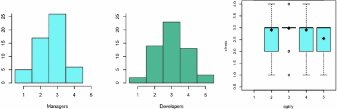
Fig. 1.
Left and Centre: Reported stress by managers and developers, on a scale from 1 (unstressed) to 5 (very stressed). Right: Stress reported by Level of Agility; the boxplots show the medians as heavy black lines, inner quartiles as coloured boxes, outer quartiles as whiskers, and the means as diamonds. (Color figure online)
4 Findings
In our survey we asked how Agile software development had influenced their stress at work. They answered on a scale from 1 (significantly less stressed) to 5 (significantly more stressed). Figure 1 (left and centre) shows histograms of the results. As we can see there is a range of answers, with most developers reporting a neutral level, and most “managers” reporting somewhat less. Although these results are not extreme, they do suggest some reason for concern, with sizeable numbers reporting they are more stressed or significantly more stressed (levels 4 and 5).
Our next question relates to the role of Agile development. In our survey, we asked professionals to report the “level of agility” on a scale of 1–5, where 1 was “Mostly Plan-Driven”, and 5 was “Mostly Agile”. We show the results as a set of boxplots in Fig. 1 (right). These show that at each level of agility, there is a range of stress reported, but the ranges are remarkably similar at all levels. For example, the distribution, median, and mean are the same for agility levels 2 (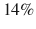) and 4 ( ). Level 3 (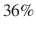) and Level 5 (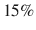) show tighter and lower ranges, but they have the same median as levels 2 and 4. We found this interesting, because it suggests that the level of agility is not particularly related to the stress reported. We also explored the relationship between stress and experience with Agile methods, and again found little evidence. We do note, however, that we had fewer professionals with little experience in Agile than in our 2014 survey: we speculate this is simply because of the increasingly widespread adoption of Agile methods.
). Level 3 (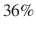) and Level 5 (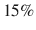) show tighter and lower ranges, but they have the same median as levels 2 and 4. We found this interesting, because it suggests that the level of agility is not particularly related to the stress reported. We also explored the relationship between stress and experience with Agile methods, and again found little evidence. We do note, however, that we had fewer professionals with little experience in Agile than in our 2014 survey: we speculate this is simply because of the increasingly widespread adoption of Agile methods.
). Level 3 (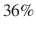) and Level 5 (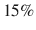) show tighter and lower ranges, but they have the same median as levels 2 and 4. We found this interesting, because it suggests that the level of agility is not particularly related to the stress reported. We also explored the relationship between stress and experience with Agile methods, and again found little evidence. We do note, however, that we had fewer professionals with little experience in Agile than in our 2014 survey: we speculate this is simply because of the increasingly widespread adoption of Agile methods.Our survey was designed to explore various aspects of the software development experience, and in particular we wanted to identify the practices in use, and the influences that were perceived as resulting. This is the basis of our input-output model: the practices are the inputs, and the influences are outputs (or outcomes). We asked professionals to consider a variety of practices, and a variety of influences they experience in their workplace, rating each on a scale of 1–5. For the practices, we included several technical practices (TP), collaborative practices (CP), and planning practices (PP). For the influences, we included business influences (BI), software influences (SI), and team influences (TI). For more detail, please see the survey report [4].
To explore how the practice and influences related to the stress, we looked for correlations. To compute the correlation, we use Spearman’s non-parametric “rho” () method, rather than Pearson’s r, because our Likert scale data is ordinal, and this approach supports more conservative results. A rho approaching 1 is an extremely close match, approaching is a strong inverse match, and rho approaching 0 is a very poor match.
Our speculation was a relationship between collaborative processes overall, and stress. We therefore calculated a composite score based on all collaborative practices, and compared it with the stress data. We did not find a strong connection: 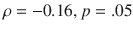.
We then explored each of the practices, and each of the influences, calculating the correlation of each individually with stress. We modified p-levels with the Bonferroni correction for multiple tests, and used an alpha level of 0.05. For practices, we found the only practice with a significant effect was the “Self-Organizing Team” collaborative practice showing 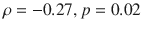 (Bonferroni corrected). On further inspection, we found this relationship was strongest with managers, with 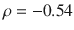.
Exploring influences, we found a more diverse picture. Table 1 shows the top 10 correlations, ranked by . The p-levels again reflect Bonferroni correction for multiple tests, and we omit any results above an alpha level of 0.05.
As can be seen, the influences that play a role are varied, with software, business, and team influences all involved. Perhaps most notably, several software influences (SI) rate highly: lower defect levels, good software architecture, and overall software quality are all associated with lower stress. The business influences (BI) also relate to good process outcomes, such as requirements management and ability to manage changing priorities. Team influences (TI) reflect a positive environment, such as good morale, an engaged customer, and effective meetings. Looking at differences between managers and developers, we found most of the influence relationships concerned managers, but it was developers who most highly rated low defect rates, ability to manage changing priorities, and morale as most related to reduced stress.
Table 1.
Stress correlations for practices.
Question | rho | p.value | |
|---|---|---|---|
1 | SI Defect rate | <.001 | |
2 | TI Team morale motivation |
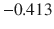
| <.001 |
3 | SI Software architecture |
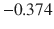
| <.001 |
4 | SI Software quality |
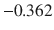
| <.001 |
5 | BI Requirements management |
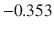
| 0.001 |
6 | SI Engineering discipline |
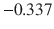
| 0.001 |
7 | SI Software maintainability |
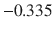
| 0.001 |
8 | TI Engagement of customer product owner |
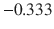
| 0.001 |
9 | BI Ability to manage changing priorities |
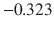
| 0.002 |
10 | TI Effectiveness of meetings |
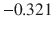
| 0.002 |
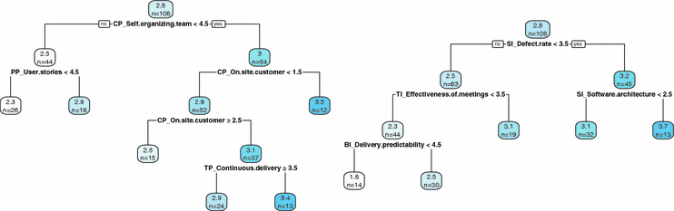
Fig. 2.
Recursive partitioning: stress factors in practices and influences.
Although the correlation tables are helpful, we know that various factors are involved in understanding stress and we suspected some were more important than others. To explore this further, we applied recursive partitioning to create regression trees [2, 11]. This approach begins with the whole data set, and determines which independent variable, and at what point, best distinctly divides the dependent variable: stress in our case. We thus obtain two coherent sets, one with lower satisfaction, and one with higher, and so on recursively; we stop at 10% of the sample. We show two trees in Fig. 2, one each for practices and influences. The top number at each node shows the stress value mean for the subtree.
Looking at practices, we see again that the Self-Organizing Team is the single most important factor. People who rate their experience of that practice as 4 or lower are more stressed. Those without an on-site customer are worse still. Alternatively, those who strongly use user stories are least stressed. For influences, low defect rate dominates. Those who rate that outcome as less than 3.4 are more stressed. Those who rate software architecture as poor are even more stressed. Alternatively, those who achieve effective meetings and predictable delivery are least stressed.
5 Discussion and Conclusions
In this paper we set out to explore a speculation based on earlier work: that in Agile development it appears that stress was still a factor in professional experience. We suspected a lack of collaborative practices might be the cause. Using data from a new study, we found a somewhat more complex picture. First, while a number of participants reported more stress, a similar number reported less stress, and the dominant level was neutral. Second, neither the level of agility claimed, nor Agile experience, was much related to the level of stress reported.
When we explored the practices related to avoiding stress, we found collaborative practices in general were only weakly related to reduced stress, but the effect of Self-Organizing Teams was stronger, especially among those with a leadership role. Lower stress was also linked to many software quality outcomes, such as low defect rate and good software architecture. Looking for the dominating effects, for practices we again found self-organizing teams were most helpful, and story mapping; for developers it was again technical outcomes that were linked to lower stress. The result is not quite what we expected, but indicates a complex structure of stress in software development, and in particular the practices and influences most related to low stress environments.
We acknowledge a number of threats to validity. Our data was self-reported, and from a single country, Switzerland, so local organizational culture might influence the results. There was little evidence for our initial idea about the origin of stress, so our exploration was post-hoc. We therefore need to conduct more research, which will also allow us to take more care in clarifying the key constructs, and to better explore causality.
Acknowledgements
We thank the study participants, the anonymous referees of this paper, and the Swiss IT organizations swissICT and SWEN for funding the study.

Open Access This chapter is licensed under the terms of the Creative Commons Attribution 4.0 International License (http://creativecommons.org/licenses/by/4.0/), which permits use, sharing, adaptation, distribution and reproduction in any medium or format, as long as you give appropriate credit to the original author(s) and the source, provide a link to the Creative Commons license and indicate if changes were made.
The images or other third party material in this book are included in the book's Creative Commons license, unless indicated otherwise in a credit line to the material. If material is not included in the book's Creative Commons license and your intended use is not permitted by statutory regulation or exceeds the permitted use, you will need to obtain permission directly from the copyright holder.
References
1.
Beehr, T.A., Newman, J.E.: Job stress, employee health, and organizational effectiveness: a facet analysis, model, and literature review. Pers. Psychol. 31(4), 665–699 (1978)Crossref
2.
Breiman, L., Friedman, J., Stone, C.J., Olshen, R.A.: Classification and Regression Trees. CRC Press, Boca Raton (1984)MATH
3.
Kropp, M., Meier, A.: Swiss agile study 2014. Technical report, Swiss Agile Study (2014). ISSN 2296–2476, http://www.swissagilestudy.ch/files/2015/05/SwissAgileStudy2014.pdf
4.
Kropp, M., Meier, A.: Swiss agile study 2016. Technical report, Swiss Agile Study (2017, unpublished). http://www.swissagilestudy.ch
5.
Kropp, M., Meier, A., Biddle, R.: Agile practices, collaboration and experience: an empirical study about the effect of experience in agile software development. In: Abrahamsson, P., Jedlitschka, A., Nguyen Duc, A., Felderer, M., Amasaki, S., Mikkonen, T. (eds.) PROFES 2016. LNCS, vol. 10027, pp. 416–431. Springer, Cham (2016). https://doi.org/10.1007/978-3-319-49094-6_28Crossref
6.
Laanti, M.: Agile and wellbeing-stress, empowerment, and performance in Scrum and Kanban teams. In: 2013 46th Hawaii International Conference on System Sciences (HICSS), pp. 4761–4770. IEEE (2013)
7.
Mannaro, K., Melis, M., Marchesi, M.: Empirical analysis on the satisfaction of IT employees comparing XP practices with other software development methodologies. In: Eckstein, J., Baumeister, H. (eds.) XP 2004. LNCS, vol. 3092, pp. 166–174. Springer, Heidelberg (2004). https://doi.org/10.1007/978-3-540-24853-8_19Crossref
8.
Rajeswari, K., Anantharaman, R.: Development of an instrument to measure stress among software professionals: factor analytic study. In: Proceedings of the 2003 SIGMIS Conference on Computer Personnel Research: Freedom in Philadelphia-Leveraging Differences and Diversity in the IT Workforce, pp. 34–43. ACM (2003)
9.
Rasmussen, T.H., Jeppesen, H.J.: Teamwork and associated psychological factors: a review. Work Stress 20(2), 105–128 (2006)Crossref
10.
Sonnentag, S., Brodbeck, F.C., Heinbokel, T., Stolte, W.: Stressor-burnout relationship in software development teams. J. Occup. Organ. Psychol. 67(4), 327–341 (1994)Crossref
11.
Therneau, T.M., Atkinson, E.J., et al.: An introduction to recursive partitioning using the RPART routines. Technical report, Mayo Foundation for Medical Education and Research, Rochester, Minnesota, USA (1997)
12.
VersionOne: 11th state of agile survey. Technical report, VersionOne, Inc. (2017)